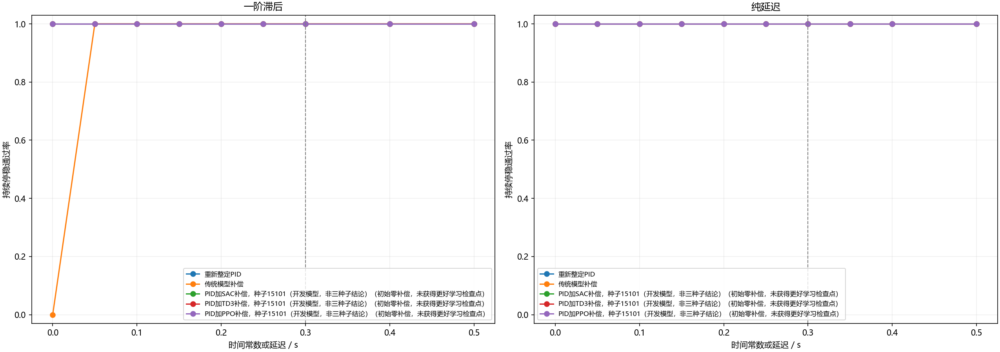
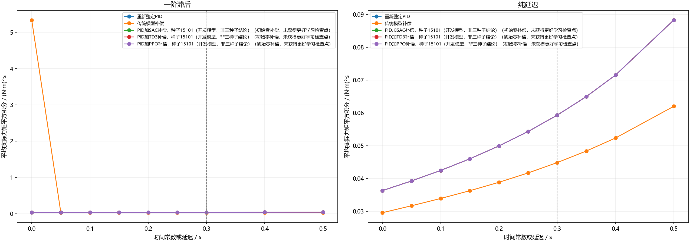

修正训练后的连续控制多算法比较
本研究分别比较一阶滞后和纯延迟下的连续力矩控制。SAC、TD3、PPO使用相同观测、相同连续补偿幅度、相同训练交互预算；不把相同步数称为相同算力。开发选择和正式三种子验证分别报告。
主要验收：从8秒起直到22秒的全部采样点，角度误差≤1°、角速度≤0.5°/秒。实际力矩平方积分单位为(N·m)²·s；失败情况下的较低代价不作为收益。
实际完成15次训练，累计2,654,208交互步；独立测试12,160回合，128个独立初态跨参数和控制器复用。
修正了什么
失败后保持固定440步计时并持续惩罚，不允许提前结束少受罚；学习补偿从确定性零动作开始，初始行为与PID相同；奖励更重视控制代价与截止后约束；历史窗口覆盖0.6秒。初始化、奖励及检查点选择在训练前声明。实际选中步数为0时，只能解释为回退原PID，不能称为学习成功。
理想单轴训练检查
这部分仅检查直接策略能否学会简单稳定控制，不用于证明相对PID的正式优势。
开发与正式选择
一阶滞后
开发没有产生符合门槛的已学习检查点，未进入正式三种子训练。不能把该结果写成算法能力上限。
纯延迟
开发没有产生符合门槛的已学习检查点，未进入正式三种子训练。不能把该结果写成算法能力上限。
核验与结论范围
每个响应分片均独立重算动力学、连续实际力矩积分、历史特征、确定性网络动作、抗饱和PID状态及全部验收指标；检查源码、参数、模型、场景及响应哈希。主比较按初态聚类，12个区间作Bonferroni校正。
本研究仍是单轴实验。三轴需要针对完整耦合模型另行联合训练，不以逐轴迁移代替。若本轮没有优势，按计划进入三个有工程机制的后续场景，保留本轮阴性结果。
复核：python -X utf8 -B 运行研究.py verify；重建报告：python -X utf8 -B 运行研究.py report。


失败方法的实际代价仅供诊断，不与成功方法解释为同等任务下的节省。